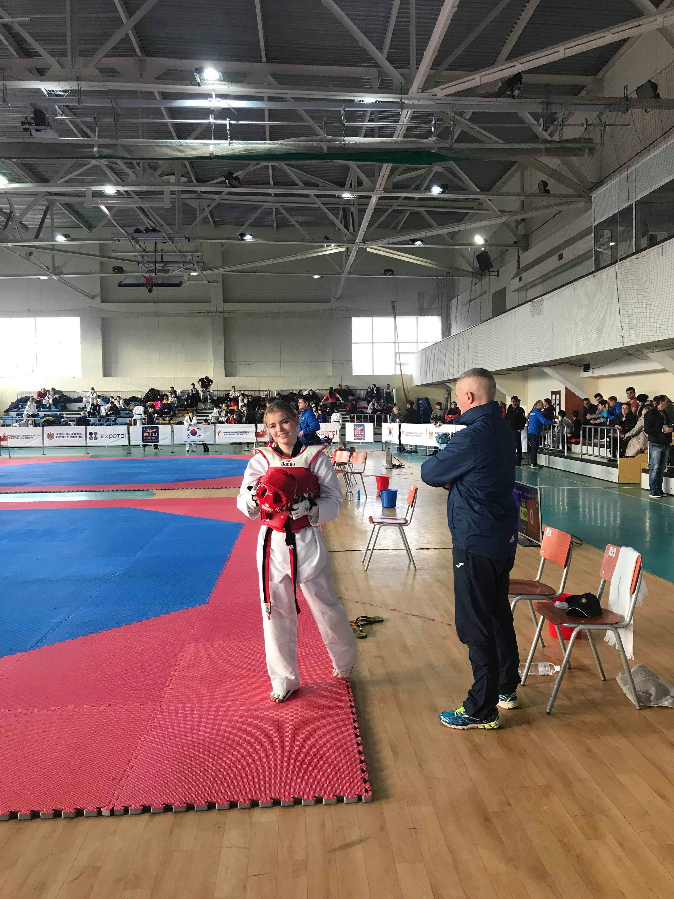

Taekwondo este o arta amartiala coreeana, caracterizata in special prin lovituri inalte cu piciorul si lovituri cu pumnul. Taekwondo este unul dintre sporturile nationale coreene, practicat de peste 2000 mii de ani, reprezentand unul dintre cele mai vechi arte martiale. Recent intrat in categoria sporturilor olimpice, practicarea acestui sport in intreaga lume este structurata si administrata de catre World Taekwondo.
Conform regulamentului international, Lupta dintre cei doi sportivi ai meciului de taekwondo este caracterizata de lovituri in mare parte ale membrelor inferioare, punctate corespunzator de catre sistemul electronic pus la dispozitie, dar si de arbitrii, iar lovitura cu pumnul trebuie sa fie precisa si conform regulamentului pentru a fi punctats. Sportivii poarta echipamente de protectie pe cea mai mare parte a corpului (casca de protectie dotata cu senzori electronici, protectie dentara, vesta dotata cu senzori pentru punctare, protectii pentru antebrate, manusi, tibiere si metatarsiene dotate cu senzori electronici pentru a fi realizată punctarea loviturilor.) Cei doi luptatori poarta culorile albastru, respectiv rosu ( in coreeana chong, respectiv hong). Acestia se lupta pe o suprafata octogonala ori patrata, format 10x10 ori 12x12. Fiecare patrat al suprafetei are latura de un metru. Meciurile sportivilor sunt atent coordonate de catre arbitrii. Acestia sunt in numar total de trei pe suprafaaa de lupta, unul central, menit sa stabileasca ordinea meciului prin acordarea penalizarilor corespunzatoare, ceilalti doi stand in colturi opuse alte saltelei, tinand in mana judge box-ul, un dispozitiv pentru acordarea anumitor tipuri de puncte, in functie de lovitura fiecarui sportiv in parte. La masa suprafetei exista un arbitru care se ocupa de partea tehnica a meciului de taekwondo, lucrand la sistemul incorporat intr-un dispozitiv. Un alt arbitru tine evidenta fiecarui meci in parte pe o hartie speciala, in cazul unei posibile erori la nivelul echipamentelor. Ultimul arbitru, este cel de la Video-Replay, un sistem de contestare a deciziilor luate de catre arbitrii de la suprafata, de catre antrenorii sportivilor.
